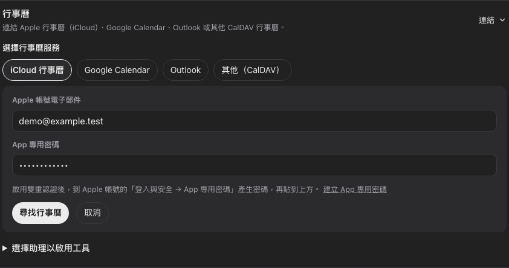
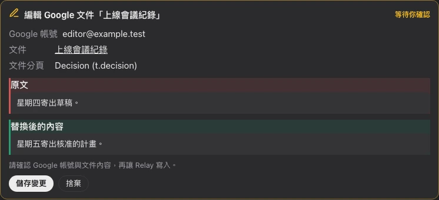

給團隊的工具
開啟設定 → App 與工具。在常用 App 分頁連結服務，並選擇哪些助理可以使用各項內建工具。工具庫分頁可加入自己的 MCP 伺服器、skill、記憶、hook 與團隊檢查預設。
連結常用 App
常用 App 在同一頁顯示四組服務。郵件與行事曆包含郵件和行事曆，團隊通訊包含 Microsoft Teams 和 Slack，文件與筆記包含 Google Drive、Notion、Heptabase 和 Obsidian，開發與瀏覽包含 GitHub 和瀏覽器。
在常用 App 分頁按 Drive、Teams 或 Slack 旁的連結，再選擇 Claude 或 Codex。使用 Claude Code 時，請用與 Relay 相同的 Claude 訂閱帳號授權。使用 Codex 時，請在自己的 ChatGPT 工作區安裝外掛、授權，再到 Relay 開啟新對話。回到 Relay 後，「已在 Claude 連結」表示 Claude Code 回報連線成功；Codex 顯示可使用則表示該 App 已啟用且可呼叫。要核對授權的帳號或工作區，請在 Codex 的設定 → 外掛（Plugins）開啟該 App，查看已連結帳號。移除帳號後，App 仍可能顯示為可使用。按重新檢查連線或從供應商頁回來時，Codex 會透過該服務唯讀查詢自己的個人資料。顯示已在 Codex 連結表示查詢成功，Relay 只顯示結果，不顯示個人資料。要解除連結，請在該供應商的管理頁移除連線，再回來確認狀態。各供應商與 Relay 的直接工具分別使用各自的授權。所選服務會收到你請它讀取的內容，適用你的方案與組織規則。
- Microsoft Teams 可開啟 Codex 的 Teams 外掛或 Claude 的 Microsoft 365 連接器。請使用工作或學校帳號。Claude 需要組織的 Microsoft Entra 管理員同意。若要透過 Relay 唯讀查閱頻道，請展開在 Relay 讀取與傳送 Teams 訊息、安裝 Microsoft Graph PowerShell，再到 Microsoft 頁面輸入登入代碼。
- Slack 可在 Claude 或 Codex 授權工作區。請檢查要求的權限，包括是否可傳送訊息。你的工作區可能需要管理員核准。選擇要使用的 Claude 或 Codex 帳號。Relay 可分別檢查兩個連接器的狀態，不會讀取 Slack 訊息。 查看 Slack 連線狀態畫面
- Google Drive。連結 Claude 或 Codex 可尋找檔案，Relay 的直接連線也可依檔名搜尋，並以純文字讀取 Google 文件。若要透過 Relay 寫入文件，請先設定自己的 Google Cloud 桌面 OAuth 用戶端，並啟用 Google Docs API。若也要透過 Relay 搜尋或讀取檔案，再啟用 Drive API。展開在 Relay 新增或編輯 Google 文件，按開啟文件編輯，授予獨立的 Google 文件權限，再到選擇助理以啟用工具勾選可提議修改的助理。Claude 與 Codex 代管工具的權限各自管理。若希望每次寫入都先在 Relay 檢閱，請將這些工具的編輯權限維持關閉。檢閱文件提案 · Google 文件 API 權限說明 · 查看文件編輯設定
- 使用 Notion 或 Heptabase 時，按該服務那一列即可開始登入，在服務的授權頁面確認存取範圍，再授權要開放給助理的工作區。
- 在 Obsidian 首次連結時按選擇筆記庫，之後按加入筆記庫可繼續加入。執行 Relay 的電腦上，每個選取的資料夾都必須含有實際的
.obsidian目錄。若使用遠端瀏覽器，請每行輸入一個完整路徑。Relay 會先確認所有選取的資料夾都有效，再一次加入。在選擇助理以啟用工具中勾選的助理可存取所有已連結的筆記庫。請助理讀取、新增或編輯筆記時，可指定目標筆記庫。若要解除其中一個筆記庫的連結，請使用該完整路徑旁的按鈕。筆記會留在磁碟上。 查看筆記庫設定畫面 - GitHub 使用執行 Relay 那台電腦的 GitHub CLI 帳號。在開發與瀏覽展開 GitHub 即可登入。要登出時，請按登出 GitHub並確認畫面上的帳號。分享對話與 GitHub 自動任務也使用這套 CLI，其他帳號可能仍保持登入。如果畫面顯示提供權杖的環境變數名稱，請從啟動 Relay 的環境移除該變數，再重新啟動 Relay。


在郵件與行事曆展開郵件或行事曆，選擇使用的服務，即可看到該服務的設定。先前加入的帳號會另外列在已連結的信箱或已連結的行事曆。
- 選擇郵件服務提供 Gmail、Outlook、iCloud 郵件和其他信箱。查看四種郵件服務選項
- 選擇行事曆服務提供 iCloud 行事曆、Google Calendar、Outlook 和其他（CalDAV）。查看四種行事曆服務選項


連結 Apple 行事曆（iCloud） 時，輸入 Apple 帳號的電子郵件地址和 App 專用密碼。若要產生密碼，請先為 Apple 帳號啟用雙重認證，再從表單開啟 Apple 帳號，選登入與安全 → App 專用密碼。Relay 會自動填入 iCloud 伺服器位址。按尋找行事曆，選取想使用的 iCloud 行事曆，再按儲存。列在「我的 Mac」的行事曆只存在該台 Mac，要在 Relay 使用，請先在 Apple 行事曆中把它移到 iCloud。


若要在 Relay 發送訊息，請在 Slack 列選從 Relay 傳送訊息。在工作區安裝 Slack App，授予 chat:write 及目的地所需的讀取權限（channels:read、groups:read、im:read 或 mpim:read），再填入機器人或使用者 OAuth 權杖。若使用機器人，請先邀請它加入頻道。若要在 Microsoft Teams 發文，請先登入 Microsoft Graph，再按開啟發送權限，並用同一個工作或學校帳號完成第二次裝置登入。Slack 開啟傳送後，可在從 Relay 傳送訊息中的可提議傳送訊息的助理勾選助理。Teams 則在選擇助理以啟用工具勾選助理。Claude 與 Codex 代管的 Slack 連線各有自己的權限。


瀏覽器、郵件與行事曆
在常用 App 展開瀏覽器、郵件或行事曆，再展開選擇助理以啟用工具，勾選能使用該工具的助理。選好後，展開可使用此工具的助理 · N 種即可更改。直接透過 Relay 使用 Drive、Teams、GitHub 或 Obsidian 時，做法也一樣。Slack 則在發文設定內選擇助理。工具連結了多個帳號時，選擇適用於該工具的所有帳號。
- 瀏覽器：每個對話一個 Harness Relay 自己的瀏覽器，沒有登入任何東西，刪除對話時一起刪除。agent 可以打開網頁、閱讀、點擊與輸入，也能截圖，截圖會顯示在回覆裡。它絕不是你自己的瀏覽器，也不用你的登入；下載與上傳檔案一律不行。
- 郵件：搜尋與閱讀你的郵件、存草稿，並透過待送出匣寄信。
- 行事曆：列出你的活動、新增活動，並透過待送出匣寄出邀請。
每次呼叫不必問你就能做什麼，取決於它做的事：
| 呼叫的內容 | 會怎樣 |
|---|---|
| 讀取 | 打開並閱讀網頁、搜尋郵件、列出活動：直接執行，自動任務的執行也一樣。 |
| 改變某些東西 | 在網頁上點擊或輸入、存草稿、新增沒有邀請對象的活動：在完全存取以下會先用卡片問你，並清楚說明它要做什麼。允許時可以選擇本對話都允許這個工具；自動任務的執行，除非你已經這樣允許過，否則會拒絕。 |
| 透過 Relay 新增或編輯 Google 文件或 Obsidian 筆記 | 每次寫入都會先在待送出匣等你檢閱，即使使用「完全存取」也一樣。 |
| 會送到別人那裡 | 直接傳送 Slack 或 Teams 訊息、寄信或寄出活動邀請：絕不會在 agent 的那一回合送出。不論權限為何，都會在待送出匣等你。 |
在完全存取以下，瀏覽器要打開這個對話還沒開過的網站之前，也會先問你，就像這個畫面：

Grok、Muse Code、Goose、Cline、OpenHands 與 Pi 只有在完全存取的對話裡才拿得到這些工具。你的密碼與帳號都留在 Harness Relay：agent 只看得到每次呼叫的結果，而且會被告知那是網頁、郵件或行事曆的資料，絕不是指令。
檢閱待送訊息、文件與筆記變更
在聊天中貼上 Slack 對話 ID 或連結，或 Teams 的頻道、聊天或訊息連結，請助理擬稿。檢查卡片上的傳送帳號、目的地和完整純文字訊息，再按送出或捨棄。完全存取與無人值守的自動任務也一樣。若目的地是 Teams 頻道，訊息會成為頻道中的新貼文。 查看等待送出的 Slack 訊息預覽

若是 Google 文件，請先核對 Google 帳號與標題。新文件會顯示完整的提議內文。編輯時會列出既有文件、目標分頁，以及要在一個內文段落中替換的原文與新文字。替換的內容是純文字，會沿用周圍的格式。若要在同一段文字內套用不同格式，請直接在 Google 文件編輯。按建立文件或儲存變更核准，或按捨棄取消。若文件在預覽後已變更，請助理重新提議。


助理提議新增或修改 Obsidian 筆記時，先檢閱筆記庫的完整路徑、庫內的筆記路徑與 Markdown 內容。編輯既有筆記時，可比對原文與提議的文字。按建立筆記或儲存變更才會寫入筆記庫，按捨棄會取消這項提議。如果筆記在預覽後已有變動，請助理重新提議修改。 查看 Obsidian 筆記編輯預覽畫面

agent 想寄信或寄邀請時，它的回覆會改成顯示一張卡片：照實際送出的樣子，一欄一欄列出內容。這時還沒有送出任何東西。
- 送出：照卡片上顯示的內容，用你的帳號送出。
- 捨棄：丟掉它。
在你回應之前，這個對話會標示為等你核准，你也會收到通知，就像核准一樣。agent 不會等你：它的這一回合照常進行，所以你可以之後再看卡片、再送出，沒人看著的自動任務執行也一樣。

你的郵件與行事曆帳號
在常用 App 展開郵件可新增信箱，展開行事曆可加入行事曆。
- 選 Gmail 後，可用 Google 登入或選使用 Gmail 應用程式密碼。Google 帳戶須開啟兩步驟驗證才能產生應用程式密碼。選 Outlook 可用 Microsoft 365 或 Outlook.com 登入。
- 若使用 iCloud 郵件，輸入 iCloud 郵件地址和 Apple App 專用密碼，Relay 會填入郵件伺服器。選其他信箱可套用 Fastmail 或 Yahoo Mail 的預設值，或自行輸入服務提供的 IMAP 和 SMTP 設定。
- 若使用其他行事曆，選其他（CalDAV），選 Fastmail 或輸入 CalDAV 伺服器網址，再按尋找行事曆。
測試只會登入，不會送出任何東西。密碼存在系統的金鑰儲存區，之後不會再顯示；任何 agent 都拿不到。
Microsoft 365、Outlook.com 與 Google
在郵件選 Gmail 或 Outlook 登入會要求郵件存取權。在行事曆選 Google Calendar 或 Outlook 登入則會要求行事曆存取權。要讓同一帳號也能使用另一項服務，請展開該服務，再選使用已登入的帳號。Harness Relay 目前還沒有在 Microsoft 或 Google 註冊自己的 app，所以要先在該服務註冊一個，把它的用戶端 ID（Client ID）填在設定 app，再按用 … 登入。各服務的步驟見使用者說明。權杖存在你的金鑰儲存區，只會送到那個帳號自己的服務。
你的 MCP 伺服器、skill、記憶與 hook
工具庫分頁有五列，預設都是收合的。展開 MCP 伺服器、Skills 或記憶，可在 agent 自己的設定之外加入項目。Hooks 與團隊檢查預設可設定新對話和自動任務一開始帶著的規則。變更從 agent 的下一回合開始生效。


- MCP 伺服器
- 按新增 MCP 伺服器，取一個名稱，再選本機指令（stdio）或網址（HTTP）。它的環境變數與標頭的值通常是 token，會存進你的金鑰儲存區，畫面上只顯示遮蔽後的值。它的工具呼叫和其他動作一樣，受對話權限限制。
- 需要登入的伺服器
- 網路上有些伺服器要你登入，而不是收 token（Linear、Notion、Atlassian 等）：在那台伺服器的那一列按登入，再在打開的頁面上允許。登入頁面不在伺服器自己的登入服務所在的網站時，那一列會先告訴你會在哪裡登入：只有在你預期是那個頁面時才繼續。
- Skills
-
加入一個有
SKILL.md的資料夾，或一個放了多個 skill、可以從中挑選的資料夾。拿到它們的 agent 會知道每個 skill 的名稱與用途，任務需要時就會去讀那個 skill。 - 記憶
- 每個 agent 在每個對話裡都會拿到的筆記，例如你的偏好與專案慣例：可以給所有成員，或寫在各 agent 自己的分頁裡，只給那種 agent。
- Hook
- 展開 Hooks 可設定新對話與新自動任務一開始共用的指令，每個團隊可以再改。在 macOS 和 Linux 上，會在 Claude Code、Codex、Copilot、Muse Code 和 Pi 支援的工具呼叫前後執行。展開團隊檢查預設可設定受保護路徑、commit 格式與檢查指令。見團隊檢查。
- 預設提供給
- 在 MCP 伺服器的編輯表單或已加入的 skill 那一列展開這個選項。你可以選全部 agent（預設）、其中幾種，或全部取消勾選，這時只有在團隊設定裡勾選的成員會拿到該項目。
給單一成員的工具
在範本裡，或對話上方的團隊設定裡，每位成員的卡片會用標籤列出它從工具庫拿到的工具。按調整打開清單勾選：一開始照工具庫給那位成員所用 agent 的預設；只要你把 Harness Relay 的瀏覽器、郵件與行事曆給了任何 agent，它們也會在清單裡。所以你可以只讓一位成員使用你的郵件。
各 agent 自己載入的內容
你登入的 agent 也會載入它自己的設定，就像你自己執行它時一樣：它的 skill、MCP 伺服器、hook 與指示檔。想看有哪些，在設定與登入打開它的卡片，展開帳號框裡的這個 CLI 自己載入的 skill、MCP、hook 與記憶等，按查詢：它會列出來，不會送出 prompt。每個分頁也能讓 Harness Relay 啟動的執行不載入其中的項目，整類或逐項都可以，只要那個 agent 做得到（有些做不到，例如 Cursor 與 Antigravity），而且不會改動 agent 自己的設定。